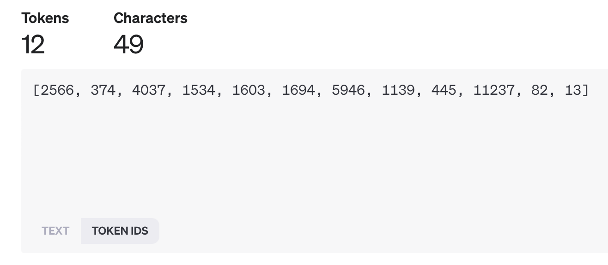

Background
Large Language Models


Tokens are then mapped to a vector of token IDs.
This leads to almost infinite creativity.
Prompt:
explain cloud computing in Azure in a short song written in German the style of Rammstein. Make sure the word "verschlimmbessern" is used exactly 3 times and that Roger Federer and is mentioned
Foundation models
- 🔨 Intended to serve as basis for building other workflows
- 📚 Trained on massive amounts of data
- ⏳ Frozen in time at training
- 📷 blurry JPEG of their training data

Foundation models
- 📖 Additional context can help them, but they will still lack the detailed domain knowledge
- 🛠️ They can be constrained and guided by prompt engineering though the process is not deterministic

Hallucination
- 💭 The more detailed the conversation, the more likely the models are to hallucinate
- 🌐 They are very good at generating plausible sounding content, but not necessarily grounded in facts

Azure OpenAI